Independent research & community development · Sudan · since 2003
Evidence, gathered with the communities it serves.
EBSSA Research Center delivers research, statistical analysis and monitoring & evaluation for governments, international organisations, NGOs, universities and businesses. What it learns, it carries back into Sudanese communities through education and outreach.
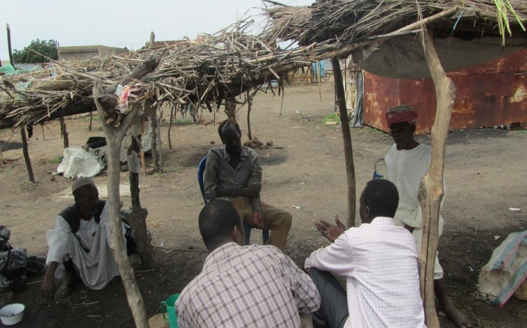
Two currents, one center.
Khartoum is where the Blue Nile and the White Nile meet. EBSSA was built on the same idea: rigorous research and community engagement are stronger as one current than as two.
Reliable data for informed decisions
Since 2003, EBSSA has produced the surveys, statistics and evaluations that governments, international organisations and NGOs rely on to plan, fund and correct their work.
- Social, health, economic and development research
- Survey design and field data collection
- Statistical analysis and monitoring & evaluation
- Evidence-based policy recommendations
Knowledge that returns to people
Research findings do not stay in reports. Through workshops, educational programmes and awareness campaigns, EBSSA turns evidence into conversations communities can act on.
- Public health and cultural practices
- Gender equality and child protection
- Social norms and human rights
- Ending female genital mutilation
“Research should not only generate knowledge but also empower communities to improve their quality of life.”
EBSSA founding principle
What we deliver
Every engagement is scoped around the decision it needs to inform, quantitative or qualitative, large or small. EBSSA works on research method and nothing else, which is why it knows what these studies demand.
-
Research design & policy research
Evidence-based studies framed around a real policy or programme question, from literature review to final recommendations.
OutputsStudy protocol · Technical report · Policy brief -
Survey design
Questionnaires, sampling frames and pre-testing, prepared in Arabic and English so instruments read naturally to the people answering them.
OutputsSurvey instrument · Sampling plan · Enumerator manual -
Data collection
Trained field teams conduct household surveys, key-informant interviews and focus groups in person, with online and telephone methods where those reach further.
OutputsCleaned dataset · Field report · Data quality log -
Statistical analysis
Descriptive and inferential analysis, weighting and indicator construction, presented so non-specialists can read the result and trust it.
OutputsAnalysis tables · Indicator set · Data visualisations -
Monitoring & evaluation
Baseline, midline and endline studies, results frameworks and evaluations that tell partners what is working and what needs to change.
OutputsM&E framework · Evaluation report · Learning brief -
Recommendations & dissemination
Practical recommendations for decision-makers, and findings returned to communities in plain language through briefings and workshops.
OutputsRecommendations memo · Community briefing · Presentation -
Training in research methods
Courses and in-house programmes in statistical method, survey practice and data collection, for research teams and for client staff who need to run studies of their own.
OUTPUTSCourse programme · Training materials · Trained enumerators -
Behavioural & campaign research
Studies of what holds a behaviour in place and what shifts it, including evaluation of public campaigns and research among culturally diverse populations.
OUTPUTSBehavioural model · Campaign evaluation · Audience segmentation -
Customer satisfaction measurement
Survey design and feedback systems for government agencies and companies, with training so staff can run and read their own satisfaction studies afterwards.
OUTPUTSSatisfaction index · Feedback system · Staff training
Four fields, one method.
The same discipline of careful sampling, respectful interviewing and honest analysis runs through every domain EBSSA works in.
Social
Social norms, cultural practices, gender and child protection, and the lived conditions behind them.
Health
Public health knowledge, attitudes and practices, service access, and behaviour-change outcomes.
Economic
Livelihoods, markets, household income and business performance, with environmental monitoring where it bears on them.
Development
Programme monitoring and evaluation across sectors, for sustainable development that lasts beyond the project.
Selected work
A record of projects designed, run and delivered to exacting standards. Named studies, with where each happened, the method used and who it was with.
-
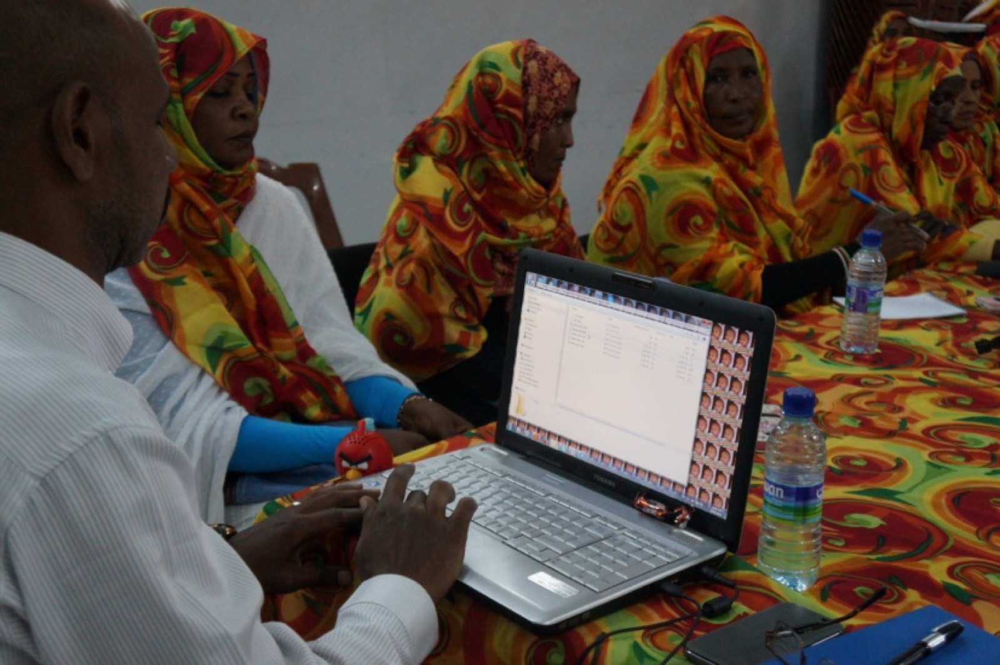
Five yearsEvaluating the Saleema Campaign
For five years EBSSA led the evaluation of Saleema, assessing the campaign as a national strategy for the abandonment of female genital mutilation. Saleema is an initiative of UNICEF and the National Council for Child Welfare.
UNICEF · National Council for Child Welfare
-
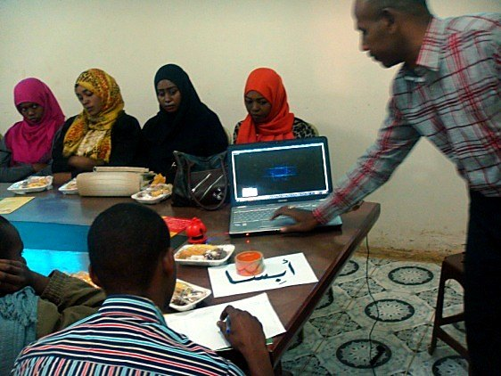
2012Public perceptions of Saleema
An assessment of how the public understood and responded to the Saleema Campaign, carried out in Khartoum as a collaborative initiative between EBSSA and UNICEF.
Khartoum · jointly with UNICEF
-
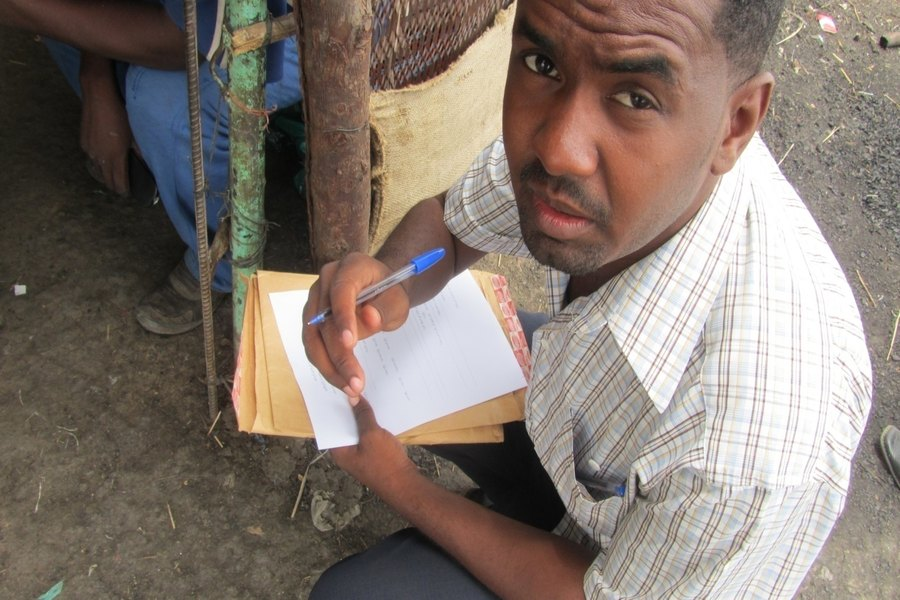
2012Prevalence, belief and readiness to end FGM
A rapid survey in Damazin measuring the prevalence of female genital mutilation, the prevailing ideologies that sustain it, and how ready the community was for its elimination.
Damazin · rapid survey
-
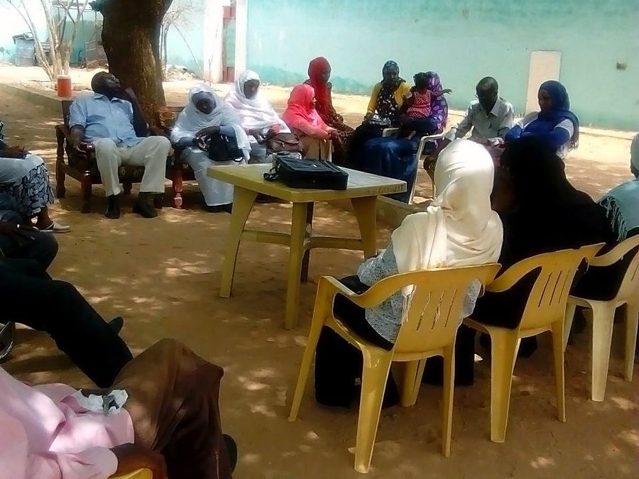
2011Perceptions of elimination programmes
Focus group discussions across Darfur exploring how communities perceived the programmes working to eliminate female genital mutilation, run as a joint initiative with UNICEF.
Darfur · focus groups, jointly with UNICEF
-
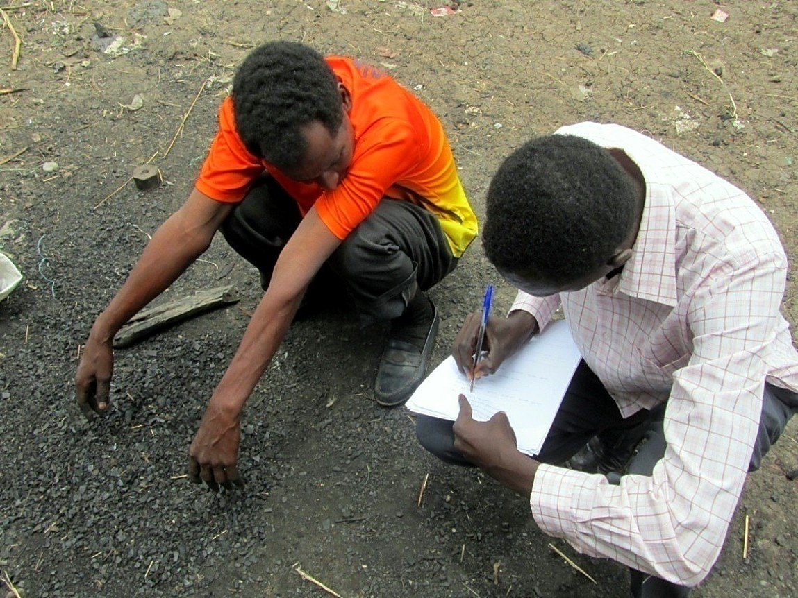
2006Survey fieldwork in Sennar
Survey design and face-to-face data collection in Sennar, among the Center's earliest large field operations and an early test of its capacity to manage complex fieldwork.
Sennar · household survey
-
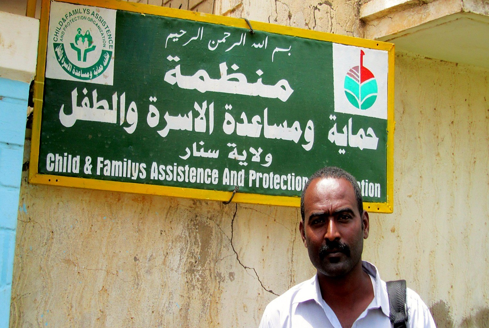
OngoingCustomer satisfaction measurement
EBSSA pioneered the statistical measurement of customer satisfaction in Sudan, designing survey methodologies and feedback systems, then training client staff to run and read their own studies.
Government agencies · commercial companies
Flagship programme
The Saleema campaign
EBSSA's longest engagement, and the work the Center is best known for.
Saleema is a national campaign for the abandonment of female genital mutilation, run by the National Council for Child Welfare with UNICEF. Saleema is the Arabic word for whole and unharmed.
EBSSA led the evaluation of the campaign over five years, assessing it as a strategy rather than as a set of activities: whether it moved what people believed, what they were willing to say, and what they finally did.
In Khartoum in 2012 the Center ran a separate assessment of how the public understood and responded to the campaign, jointly with UNICEF. Related fieldwork measured prevalence and community readiness in Damazin, and explored how communities saw elimination programmes through focus groups in Darfur.
That work became research in its own right. Dr. Nada Alassad's doctoral thesis applies the Decomposed Theory of Planned Behaviour to the abandonment of female genital mutilation in Sudanese society, testing which beliefs, social pressures and perceived controls actually move a household's decision.
- Role
- Evaluation lead
- Duration
- Five years
- Partners
- UNICEF · National Council for Child Welfare
- Fieldwork
- Khartoum · Damazin · Darfur
From the field
Good data is collected face to face. EBSSA's enumerators work in the marketplaces, workshops and homes where daily life actually happens.
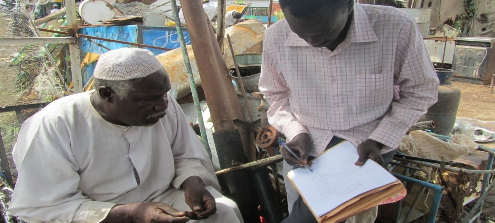
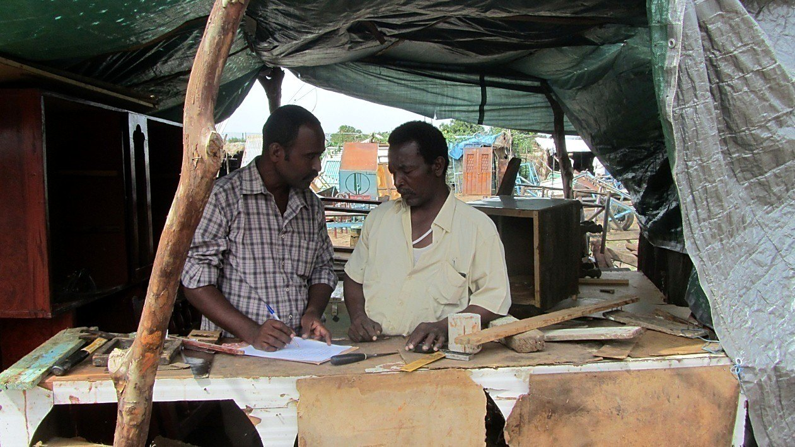
Trained, local, accountable
Field teams are recruited and trained by EBSSA, speak the languages of the communities they visit, and follow written protocols for consent, privacy and data quality.
How a study runs
From the first scoping call to the last community briefing, each stage feeds the next. The final step is what sets EBSSA apart.
Scoping
Agree the decision the evidence must inform, the population, the timeline and the budget.
Design
Sampling strategy, instruments in Arabic and English, ethics and consent procedures.
Field collection
Trained enumerators collect data in person, with daily quality checks.
Analysis
Cleaning, weighting, statistical analysis and clear visualisation of results.
Recommendations
Practical, prioritised recommendations written for the people who will act on them.
Return to community
Findings go back to participants through briefings, workshops and awareness sessions.
Community engagement
Knowledge that goes back to the community.
EBSSA delivers educational programmes, workshops and awareness campaigns on the issues that shape people's lives, led by evidence and built on participation. Findings are published so that communities, practitioners and partners can use them.
- Public health
- Cultural practices
- Social norms
- Gender equality
- Child protection
- Human rights
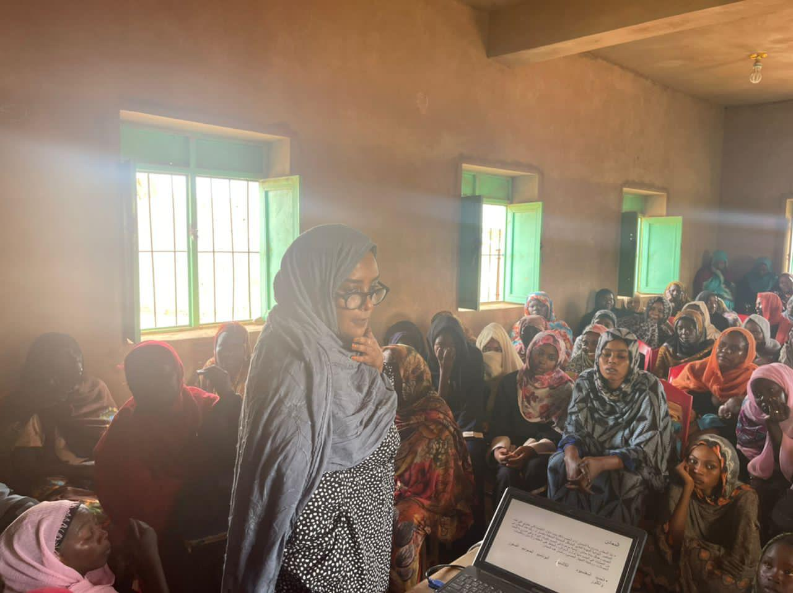
Ending female genital mutilation through evidence
EBSSA's longest-standing programme of work addresses female genital mutilation. The Center treats it as a research problem rather than a health message alone, combining awareness work, social marketing and behaviour-change studies that measure what actually shifts a practice.
That approach extends to harmful practices more broadly: long-standing traditions that persist without sufficient scientific or social evidence behind them. EBSSA examines what sustains a practice, tests what changes it, and returns the findings to the families and communities who decide whether it continues.
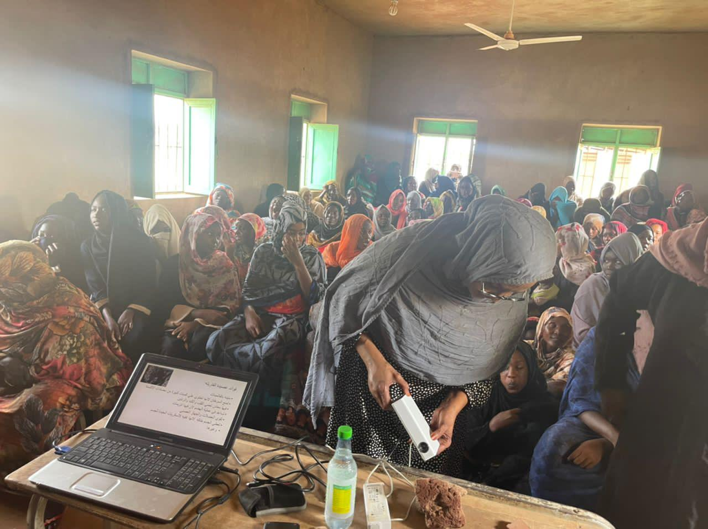
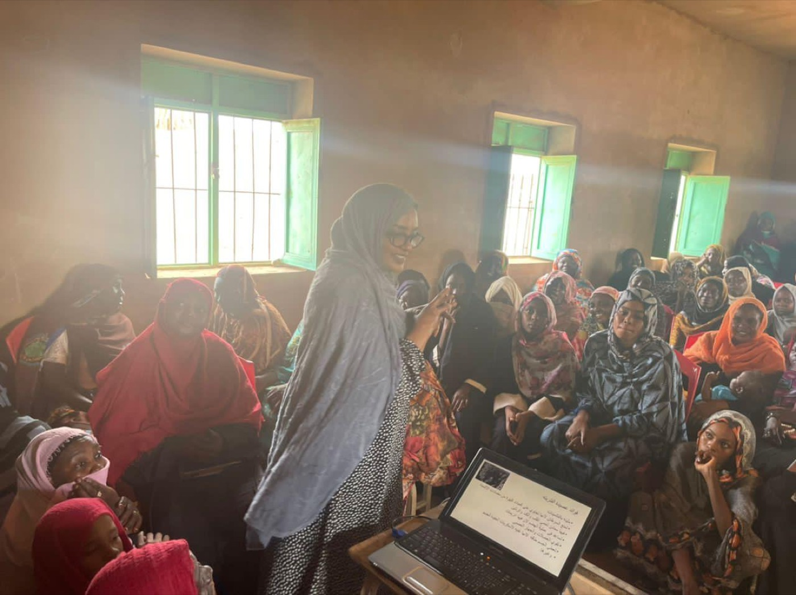
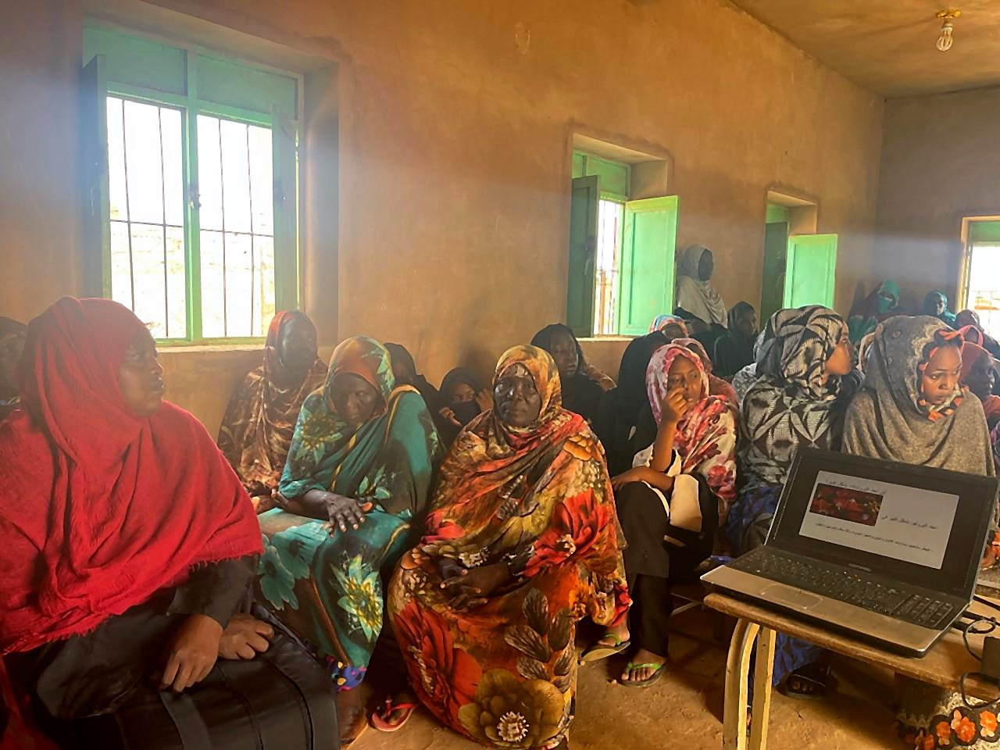
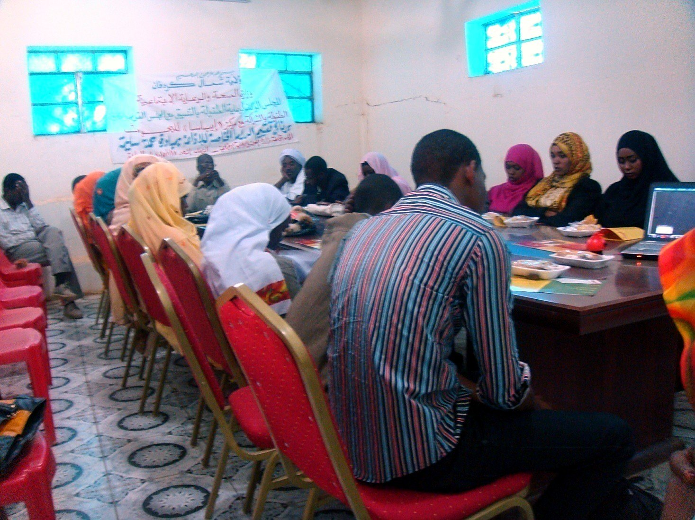
About the Center
A Sudanese research institution, since 2003.
EBSSA Research Center is a Sudanese research institution established in Sudan, with its work and partnerships extending across Sudan and beyond. Founded in 2003 by Dr. Nada Alassad with a group of statisticians, it was Sudan's first private research centre, and works as an independent research and community development organisation committed to impartiality.
Over more than twenty years it has built deep expertise in social, health, economic and development research, providing reliable data and practical recommendations that support informed decision-making and sustainable development. Through research, education and outreach it also serves as a platform for sharing evidence with the people and institutions who can act on it, and works to strengthen research practice across Sudan and Africa.
- Founded
- 2003
- Name
- Elnahdaa for Business Statistics and Scientific Audit
- Founder
- Dr. Nada Alassad
- Origin
- Established in Sudan
- Status
- Independent research center
- Reach
- Across Sudan and beyond
- Languages
- Arabic · English
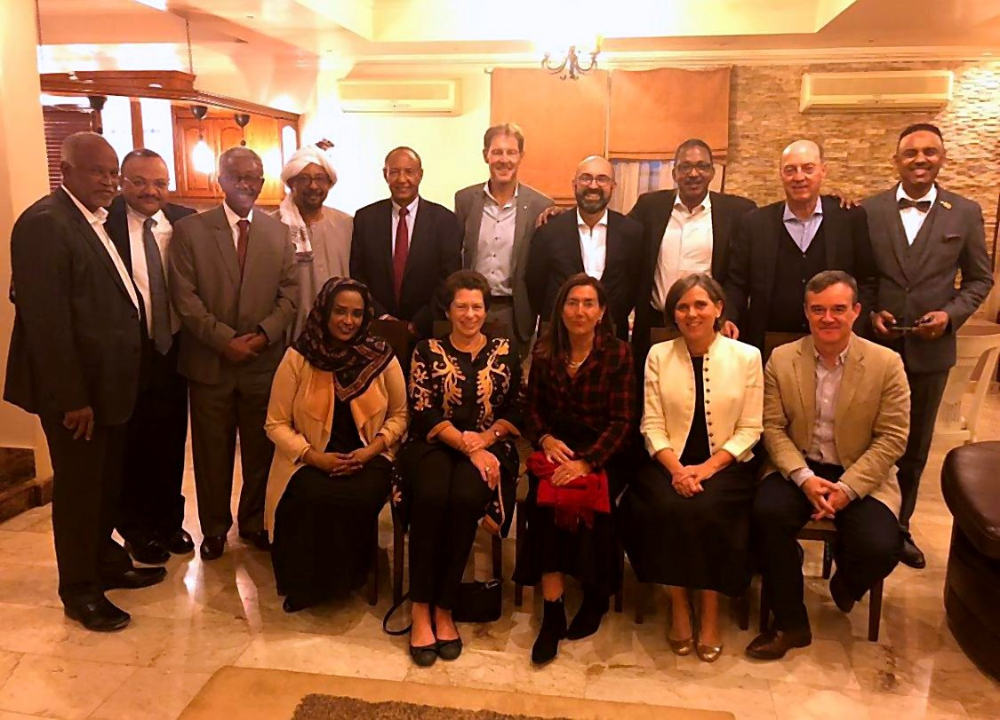
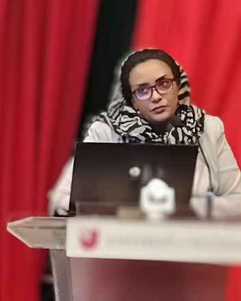
Founder & Director
Dr. Nada Alassad
Researcher · Lecturer · Founder, EBSSA Research Center
Dr. Nada Alassad founded EBSSA in 2003 and has led it since. Trained in econometrics and social statistics at the University of Khartoum, she went on to a master's in economics there and completed a PhD in Business Administration at the European University Cyprus in 2023.
Her early career took her through the UNDP and USAID in Khartoum. She has lectured at the University of Khartoum and Ahfad University in Omdurman, and served as a research consultant to UNICEF from 2012 to 2017.
Her research concentrates on social practices that violate human rights, using structural equation modelling and statistical analysis to test whether programmes actually shift behaviour, and what drives the change. Her published work on female genital mutilation has appeared in the Global Health Journal and been presented at international conferences.
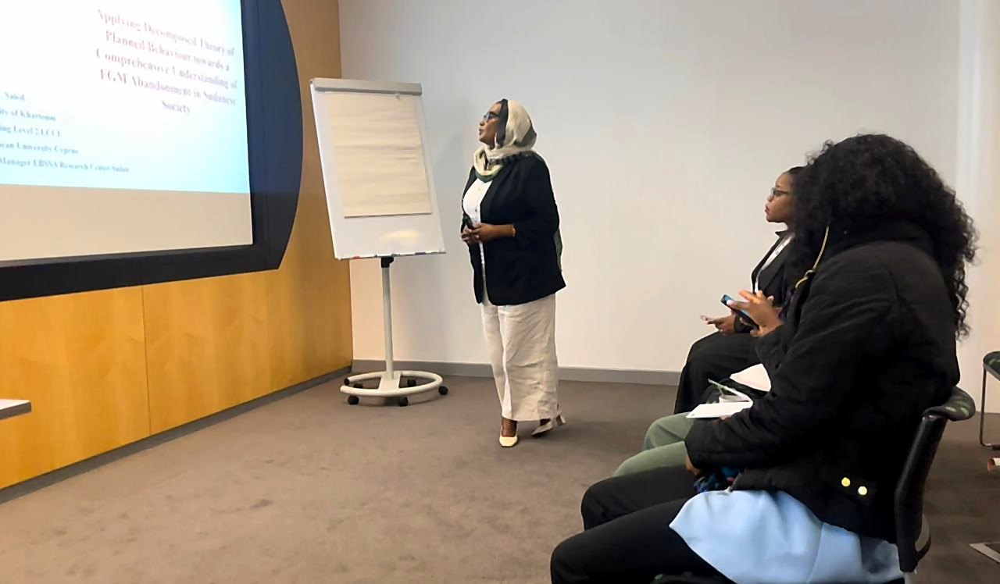
Curriculum vitae
Education
- 1992BSc Econometrics and Social Statistics, University of Khartoum
- 2002MSc Economics, University of Khartoum
- 2004Diploma in Marketing, London Chamber of Commerce and Industry
- 2023PhD Business Administration, European University Cyprus
Career
- 1993–94Project Coordinator, UNDP
- 1994–95Office Manager, USAID
- 2003–Founder and Director, EBSSA Research Center
- 2010Lecturer, University of Khartoum
- 2011–12Lecturer, Ahfad University, Omdurman
- 2012–17Research Consultant, UNICEF
Research focus & contributions
- Social practices that violate human rights, including FGM
- Structural equation modelling and statistical analysis of behaviour change
- Evaluating programme effectiveness with UNICEF and other NGOs
- Published in the Global Health Journal; presented at WASET 2023 and the World Conference on Gender and Women's Studies, Manchester, 2024
- Doctoral colloquia in Berlin (2019), Nicosia (2020) and Cyprus (2022)
- ORCID 0009-0007-1058-7174
Get in touch
Start a conversation.
Tell us the decision you need evidence for, or the community you want to reach, and we will suggest how to approach it.
Commission research
Surveys, statistical analysis, monitoring & evaluation and policy research for organisations working in Sudan.
Partner on community programmes
Workshops, education and awareness campaigns on health, gender equality, child protection and ending FGM.
Collaborate on research
Joint studies with universities and research institutions, in Sudan and across Africa.